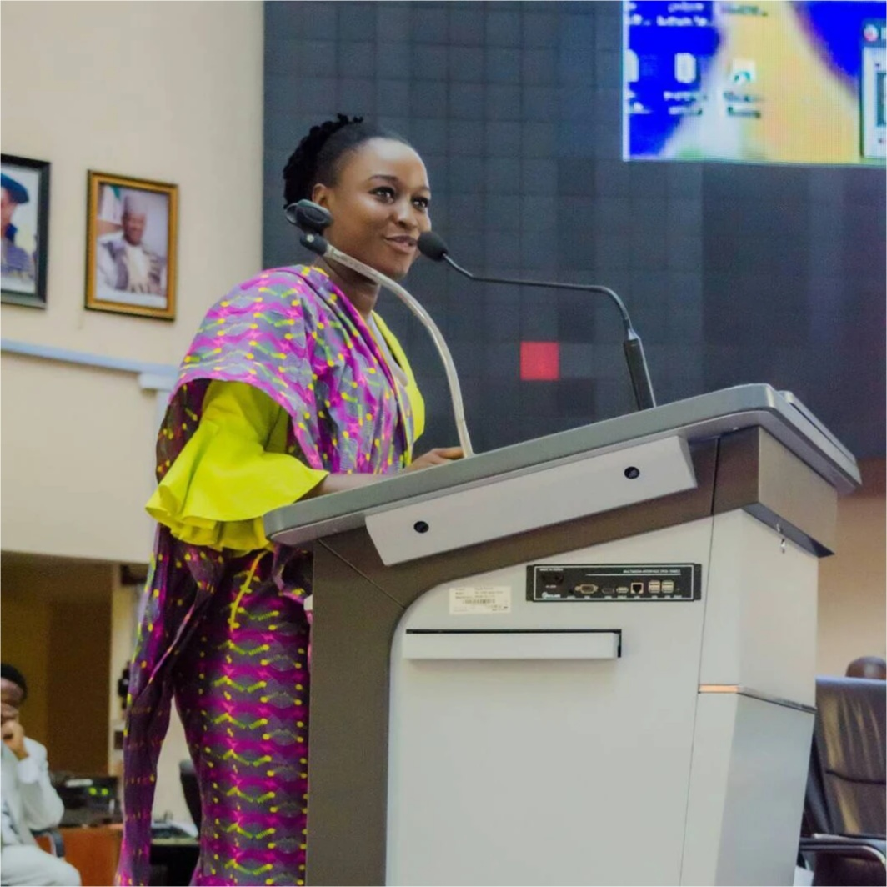
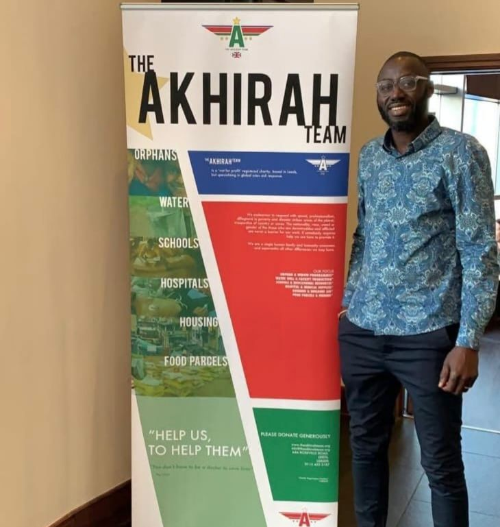

About Us
- Home
- About Us

Who We Are
Together for Inclusion, Development and Action (TIDA) is a migrant-led community organisation based in Manchester.
We work with migrant and diaspora communities to advance inclusion, strengthen community leadership and influence systemic change.
Our work recognises the experiences, strengths, knowledge and potential within diverse communities. We create opportunities for people to connect, develop their voices, build confidence, access support and take collective action.
We work with women, children, young people, families and disabled people, recognising that individuals and communities can experience multiple and overlapping barriers to participation and equality.
Our Vision
We envision a society where migrant and diaspora communities are included, represented and empowered, with the power to influence the decisions and systems that shape their lives.
Our Mission
Our mission is to empower migrant and diaspora communities to overcome exclusion, strengthen their voices and develop leadership, so that together we can influence systemic change and build a more inclusive and equitable society.
Our Values
Inclusion
Ensuring everyone has the opportunity to participate and belong.
Equality
Challenging discrimination and addressing structural inequalities.
Empowerment
Supporting people to recognise their strengths and take action.
Community Leadership
Believing communities should lead the changes that affect them.
Collaboration
Building meaningful partnerships and working collectively.
Accessibility
Making our activities and opportunities welcoming and accessible to all.
Our Team
The People Behind TIDA
Our team brings together lived experience, professional expertise and a shared commitment to inclusion, community leadership and systemic change.
